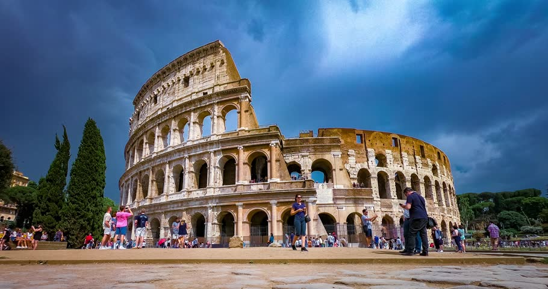

Colosseum

The Colosseum or Coliseum also known as the Flavian, is an oval amphitheatre in the centre of the city of Rome, Italy. Built of travertine limestone, tuff (volcanic rock), and brick-faced concrete,
it was the largest amphitheatre ever built at the time and held 50,000 to 80,000 spectators. The Colosseum is situated just east of the Roman Forum. Construction began under the emperor
Vespasian in AD 72 and was completed in AD 80 under his successor and heir, Titus. Further modifications were made during the reign of Domitian (81–96).These three emperors are known as
the Flavian dynasty, and the amphitheatre was named in Latin for its association with their family name (Flavius).
The Colosseum could hold an estimated 50,000 to 80,000 spectators at various points of its history over the centuries, having an average audience of some 65,000; it was used for gladiatorial
contests and public spectacles such as mock sea battles (for only a short time as the hypogeum was soon filled in with mechanisms to support the other activities), animal hunts, executions,
re-enactments of famous battles, and dramas based on Roman mythology. The building ceased to be used for entertainment in the early medieval era. It was later reused for such purposes as
housing, workshops, quarters for a religious order, a fortress, a quarry, and a Christian shrine.[citation needed]
Although substantially ruined because of earthquakes and stone-robbers, the Colosseum is still an iconic symbol of Imperial Rome and is listed as one of the New7Wonders of the World.
It is one of Rome's most popular tourist attractions and also has links to the Roman Catholic Church, as each Good Friday the Pope leads a torchlit "Way of the Cross" procession
that starts in the area around the Colosseum.
History
The site chosen was a flat area on the floor of a low valley between the Caelian, Esquiline and Palatine Hills, through which a canalised stream ran as well as an artificial
lake/marsh. By the 2nd century BC the area was densely inhabited. It was devastated by the Great Fire of Rome in 64 AD, following which Nero seized much of the area to
add to his personal domain. He built the grandiose Domus Aurea on the site, in front of which he created an artificial lake surrounded by pavilions, gardens and porticoes.
The existing Aqua Claudia aqueduct was extended to supply water to the area and the gigantic bronze Colossus of Nero was set up nearby at the entrance to the Domus Aurea.
Cross-section from the Lexikon der gesamten Technik (1904)
Although the Colossus was preserved, much of the Domus Aurea was torn down. The lake was filled in and the land reused as the location for the new Flavian Amphitheatre.
Gladiatorial schools and other support buildings were constructed nearby within the former grounds of the Domus Aurea. Vespasian's decision to build
the Colosseum on the site of Nero's lake can be seen as a populist gesture of returning to the people an area of the city which Nero had
appropriated for his own use. In contrast to many other amphitheatres, which were located on the outskirts of a city,
the Colosseum was constructed in the city centre, in effect, placing it both symbolically and precisely at the heart of Rome.
Restoration
In 2011 Diego Della Valle, head of the shoe firm Tod's, entered into an agreement with local officials to sponsor a €25 million restoration of the Colosseum.
Work was planned to begin at the end of 2011, taking up to two and a half years. Due to the controversial nature of using a public–private partnership to fund the restoration,
work was delayed and began in 2013. The restoration is the first full cleaning and repair in the Colosseum's history.The first stage is to clean and restore the
Colosseum's arcaded façade and replace the metal enclosures that block the ground-level arches. Taking three years, the final product of this work was
unveiled 1 July 2016, when the Italian minister of culture, Dario Franceschini, also announced that the funds have been committed to replace the floors by the end of 2018.
These will provide a stage that Franceschini says will be used for "cultural events of the highest level. The project also plans to create a services center and to restore
the galleries and underground spaces inside the Colosseum. New to tours of the restored marvel beginning 1 November 2017, the top two levels have been opened for guided visits.
The fourth level held the marketplace, and the top fifth tier is where the poorest citizens, the plebeians, gathered and watched the show, bringing picnics for the day-long event